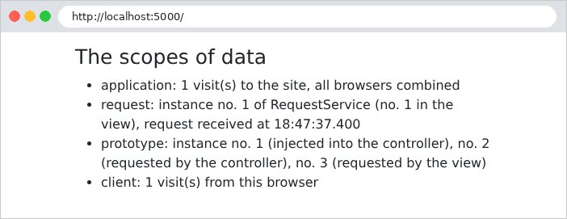

6. Gültigkeitsbereiche (Scopes) von Daten
Eine Webanwendung bedient viele Benutzer gleichzeitig, und jeder von ihnen sendet zahlreiche Anfragen. Daten können daher auf drei Ebenen geteilt werden, die man als Scope (Gültigkeitsbereich) bezeichnet:
- Application-Scope: Die Daten werden von allen Benutzern während der gesamten Lebensdauer des Servers geteilt (zum Beispiel die Liste der Ärzte);
- Request-Scope: Die Daten existieren nur für die Dauer einer Anfrage (das Modell einer View);
- Client-Scope: Die Daten gehören einem bestimmten Benutzer und müssen von einer Anfrage zur nächsten erhalten bleiben (die gewählte Sprache, der angemeldete Benutzer).
Für diesen letzten Scope werden in Webanwendungen seit langem Sessions verwendet: ein vom Server verwalteter, für jeden Browser eigener Speicherbereich, der über ein Identifikations-Cookie wiedergefunden wird ([JSESSIONID] in [Java]). [Spring MVC] verwendet sie standardmäßig weiterhin für Flash-Attribute (Beispiel 20). Die Fallstudie nutzt sie jedoch nicht, ebenso wenig wie die Beispiele in diesem Dokument (mit Ausnahme der Flash-Attribute in einigen Beispielen, etwa den Beispielen 20 und 21): Die clientseitigen Daten werden vom Browser in Cookies gespeichert. Der Server speichert zwischen zwei Anfragen desselben Benutzers nichts: Man sagt, er sei zustandslos ([stateless]). Das ermöglicht es zum Beispiel, mehrere identische Server hinter einem Load Balancer zu betreiben. Der Preis dafür: Ein Cookie unterliegt der Kontrolle des Benutzers, der es lesen und ändern kann. Daher werden dort nur nicht sensible Daten gespeichert – oder Daten, die vom Server signiert oder verschlüsselt wurden und bei denen er Änderungen daher erkennen kann: So verhält es sich beim Authentifizierungs-Token (Kapitel 8).
Auf der Serverseite entsprechen der Application- und der Request-Scope den Scopes der Beans in [Spring] (siehe Beispiel 06). Ein Bean wird von [Spring] erstellt und verwaltet; sein Scope legt fest, wie viele Instanzen erzeugt werden und für wie lange. Drei davon sind für uns von Interesse:
Annotation | Scope | Eine Instanz ... |
(keine) | singleton | für die gesamte Lebensdauer der Anwendung, geteilt von allen Anfragen. Dies ist der Standard-Scope |
[@RequestScope] | request | pro HTTP-Anfrage, geteilt von allen, die es während dieser Anfrage anfordern |
[@Scope("prototype")] | prototype | Jedes Mal, wenn das Bean bei [Spring] angefordert wird: zwei Anforderungen, zwei Instanzen |
Dies sind die Lebensdauern [Singleton], [Scoped], und [Transient] von [ASP.NET Core]. Es gibt außerdem einen Session-Scope ([@SessionScope]), den wir nicht verwenden werden.
6.1. Beispiel 23: Drei Scopes
Die Dateien [pom.xml], [application.properties], [Example23Application.java], und [WebConfig.java] (die lediglich die Dateien von [Bootstrap] bereitstellt) stammen aus den vorherigen Beispielen.
6.1.1. Die drei Beans
Die Datei [services/CounterService.java]:
- Zeile 9: ein Bean ohne weitere Angabe: Es ist ein Singleton. Sein Feld [total] hat daher den Application-Scope;
- Zeilen 14–18: Ein Webserver verarbeitet mehrere Anfragen gleichzeitig in mehreren Threads ([threads]). Führen zwei Anfragen [total++] gleichzeitig aus, können beide denselben Wert lesen, und ein Inkrement geht verloren. Ein [AtomicInteger] ist eine ganze Zahl, die die Methode [incrementAndGet] in einer einzigen, unteilbaren Operation liest, erhöht und zurückschreibt. Ein Singleton-Bean muss sich stets vor solchen nebenläufigen Zugriffen in Acht nehmen.
Die Datei [services/RequestService.java]:
- Zeile 11: Die Annotation [@RequestScope] gibt dem Bean den Scope „request“;
- Zeile 15: ein [static]-Feld gehört zur Klasse, nicht zu einer Instanz; es wird von allen Instanzen geteilt. Es zählt die Anzahl der erzeugten Instanzen;
- Zeile 17: Jeder Instanz wird bei ihrer Erzeugung eine Nummer zugewiesen. Da das Bean den Request-Scope hat, ändert sich die Nummer bei jeder Anfrage.
Die Datei [services/ToolService.java]:
Derselbe Instanzzähler für ein Bean mit dem Scope [prototype] (Zeile 10).
6.1.2. Daten mit Request-Scope: die Request-Attribute
Die Datei [config/StartFilter.java]:
- Zeilen 17–18: ein Servlet-Filter (das nächste Kapitel beschreibt sie im Detail). Er verarbeitet jede Anfrage vor [Spring MVC]. Die Klasse [OncePerRequestFilter] von [Spring] stellt sicher, dass er nur einmal pro Anfrage ausgeführt wird; die Annotation [@Component] genügt, damit [Spring Boot] ihn der Filterkette hinzufügt;
- Zeile 23: Der Filter speichert den Empfangszeitpunkt der Anfrage in einem Request-Attribut. Das Objekt [HttpServletRequest] enthält ein Dictionary von Attributen, das mit der Anfrage erstellt und zerstört wird: Alles, was sie verarbeitet (Filter, Controller, View), kann darin lesen und schreiben. Dies entspricht [HttpContext.Items] in [ASP.NET Core];
- Zeile 24: Der Filter gibt die Kontrolle an den nächsten Schritt weiter: die anderen Filter, dann [Spring MVC].
6.1.3. Der Controller
Die Datei [controllers/ScopesController.java]:
Lassen Sie uns diesen Code kommentieren:
- Zeilen 16–17: Ein Controller ist selbst ein Bean und damit ein Singleton: [Spring] erstellt ihn nur einmal und injiziert seine Abhängigkeiten in diesem Moment ein für alle Mal (Zeilen 29–35). Hier wird es interessant;
- Zeile 20: ein in ein Singleton injiziertes Singleton – nichts Besonderes;
- Zeile 23: ein Bean mit Request-Scope, das in ein Singleton injiziert wird. Beim Start gibt es keine aktive Anfrage und somit keine Instanz von [RequestService] zum Injizieren. Stattdessen injiziert [Spring] einen Proxy (einen Vermittler): ein Objekt, das dieselben Methoden hat wie [RequestService] und jeden Aufruf an die Instanz der aktuellen Anfrage weiterleitet, die bei Bedarf erstellt wird. Das bewirkt [@RequestScope];
- Zeile 25: ein Prototype-Bean, das in ein Singleton injiziert wird. [Spring] erstellt eine Instanz ... genau eine, bei der Injektion. Der Controller behält sie für seine gesamte Lebensdauer: Dieses Feld ändert sich nie. Das ist die Falle des Prototype-Scopes: Er erzeugt nur bei jeder Anforderung an den [Spring]-Container eine neue Instanz, und ein Singleton fordert seine Abhängigkeiten nur einmal an;
- Zeile 27: Um jedes Mal eine neue Instanz zu erhalten, bekommt der Controller einen [ObjectProvider<ToolService>] – ein Objekt, das in der Lage ist, bei Bedarf einen [ToolService] von [Spring] anzufordern, und zwar über seine Methode [getObject()] (Zeile 50);
- Zeile 37: das View-Modell, ein Record (siehe Beispiel 03);
- Zeile 41: der Client-Scope, ein in einem Cookie gespeicherter Zähler. Die Annotation [@CookieValue] bindet den Parameter an das Cookie [myVisits] , das der Browser sendet; [required = false]: Der Parameter wird auf [null] gesetzt, wenn das Cookie fehlt (beim ersten Besuch);
- Zeile 45: der Browser-Zähler, um 1 erhöht. Die Methode [toInteger] (Zeilen 55–61) wandelt den Cookie-Text in eine ganze Zahl um; [Integer.parseInt] wirft eine [NumberFormatException] , wenn der Text keine ganze Zahl ist oder wenn er gleich [null] ist: Der Zähler wird dann auf 0 zurückgesetzt;
- Zeilen 46–48: Das Cookie wird mit seinem neuen Wert erneut gesetzt. [ResponseCookie] ist eine Klasse von [Spring] , die den Wert eines [Set-Cookie]-Headers erzeugt: Die Methoden, die seine Eigenschaften festlegen (Pfad, [HttpOnly], [SameSite]), werden nacheinander aufgerufen, dann erzeugt [build()] das Objekt. Der Header wird von [response.addHeader] zur Antwort hinzugefügt;
- Zeilen 49–50: Der View werden Werte übergeben: der Anwendungszähler, die Instanznummer von [RequestService] für die aktuelle Anfrage, die Instanznummer des injizierten Prototyps, die Instanznummer eines in diesem Moment angeforderten Prototyps und der Client-Zähler.
6.1.4. Die View
Die Datei [templates/scopes/scopes.html]:
- Zeile 9: [th:object] (siehe Beispiele 18 und 19) verweist auf das Objekt [model]; die Ausdrücke [*{...}] in den untergeordneten Tags verweisen auf seine Eigenschaften: [*{total}] ist gleich [${model.total}];
- Zeile 14: [[[...]]] fügt den Wert eines Ausdrucks maskiert in den Text ein, genau wie [th:text] (siehe Beispiel 14);
- Zeilen 15 und 18: Der Ausdruck [${@name}] verweist auf das Bean mit diesem Namen (siehe Beispiel 16). Die View fordert ihrerseits die Beans [requestService] und [toolService] bei [Spring] während derselben Anfrage wie die Action an: So können wir die vom Controller und von der View erhaltenen Instanzen vergleichen;
- Zeile 16: das vom Filter gesetzte Request-Attribut. Für [Thymeleaf] sind die Request-Attribute Variablen wie alle anderen.
6.1.5. Ausführung
Eine Seite unter der URL http://localhost:5000/:

Simulieren wir zwei Browser mit [curl] und zwei Cookie-Dateien, [a.txt] und [b.txt]: Die Option [-b] sendet die Cookies aus der Datei, während die Option [-c] die vom Server gesetzten Cookies in der Datei speichert. Browser A hat zwei Anfragen gestellt, dann Browser B eine, und schließlich A eine letzte Anfrage (der Server wurde gerade neu gestartet):
(nur die Elemente der Liste sind dargestellt). Wir stellen fest, dass:
- der Anwendungszähler alle Besuche zählt: 1, 2, 3, 4;
- jede Anfrage ihre eigene Instanz von [RequestService] hat: 1, 2, 3, 4. Während einer Anfrage greifen der Controller (über seinen Proxy) und die View auf dieselbe Instanz zu;
- der in den Controller injizierte Prototyp stets die Nr. 1 ist: beim Start mit dem Controller erstellt, wird er nie ersetzt. Die angeforderten Prototypen sind jedes Mal neu: Controller und View erhalten zwei verschiedene, und jede Anfrage erzeugt zwei neue;
- der Client-Zähler für jeden Browser eigen ist: A hat 3 Besuche, B hat 1.
Die Datei [a.txt], die von [curl] gepflegt wird, enthält das Cookie von Browser A:
Dieses Cookie wird vom Client kontrolliert, der jeden beliebigen Wert senden kann:
Für einen Besucherzähler ist das unerheblich. Bei sensiblen Daten (Identität des Benutzers, seine Rolle) muss der Server Manipulationen erkennen können: Kapitel 8 zeigt, wie.
Aus diesen Scopes folgt eine Regel: Ein Bean darf kein Bean mit kürzerem Scope behalten. Ein Singleton, das direkt eine Instanz mit Request-Scope erhalten hätte, würde sie unbegrenzt behalten, weit über die Anfrage hinaus, für die sie erstellt wurde. [ASP.NET Core] prüft diese Regel beim Start im Entwicklungsmodus und weigert sich zu starten, wenn sie verletzt wird. [Spring] geht anders vor: Für den Request-Scope [@RequestScope] injiziert einen Proxy, was die Injektion sicher macht; für den Prototype-Scope führt es keine Prüfung durch, und das Ergebnis haben wir gerade gesehen: ein „Prototype“, der sich wie ein Singleton verhält. Wenn tatsächlich eine neue Instanz benötigt wird, wird sie bei [Spring] über einen [ObjectProvider] angefordert.
In der Fallstudie:
Scope | Daten | Wo? |
Application | Listen von Ärzten und Clients, Wörterbücher, ausstehende CAPTCHAs, Versuchszähler | Singleton-Beans ([ApplicationModel], [Translator], [CaptchaService], [AttemptLimiterService]...); die Geschäftsschicht und der Datenzugriff sind ebenfalls zustandslose Singletons |
Anfrage | View-Modell, angemeldeter Benutzer | das Modell ([Model]), ergänzt durch [CommonModel]; der Sicherheitskontext von [Spring Security] |
Client | Authentifizierungs-Token, Sprache, Flash-Nachricht | Cookies |